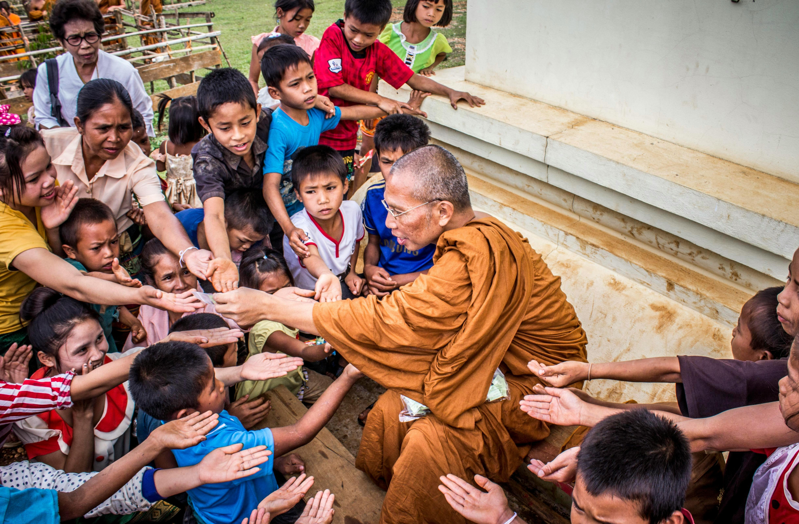
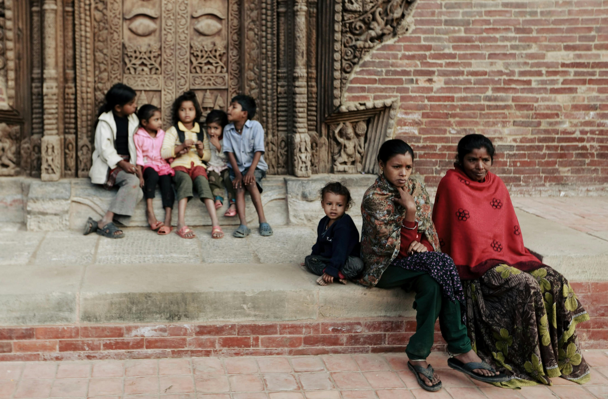
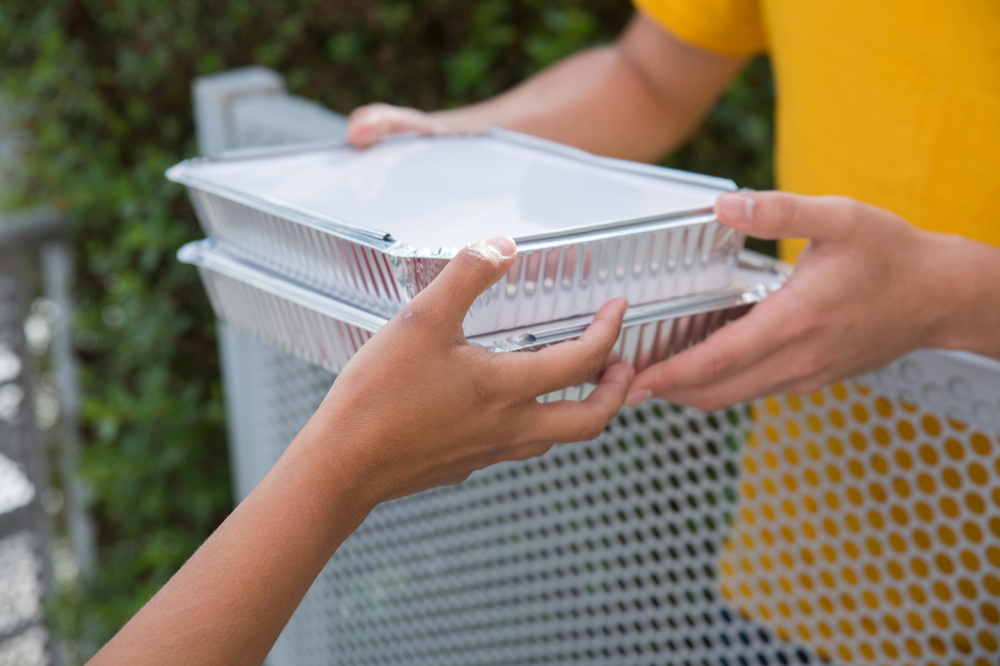

The Power of Small Acts: How Everyday Giving Transforms Lives
In a bustling city like Bangalore, it’s easy to feel overwhelmed by the challenges faced by so many. However, the simple truth is that small, everyday acts of giving can have an immense impact. Whether it’s donating a meal, providing educational supplies, or simply offering a helping hand, each act of kindness adds up to create meaningful change. Superior Foundations believes in the power of these small acts to create lasting transformations in the lives of those in need.

The Ripple Effect of Giving in Bangalore
Bangalore’s diverse communities—from the vibrant tech hubs of Koramangala to the historic streets of Malleswaram—are built on kindness and solidarity. A single act of giving, like donating food to a local shelter, not only provides immediate relief but sparks a ripple effect. It inspires others to take action, creating a culture of giving. At Superior Foundations, we’ve seen firsthand how even the smallest gesture can make a big difference, building a compassionate and resilient city, one act at a time. While large donations are valuable, the true strength lies in collective action. Across Bangalore, countless individuals have come together to support initiatives that uplift their communities. Through our food aid program, we’ve seen how the combined efforts of donors and volunteers have brought nourishment and dignity to thousands of underprivileged families. It’s these collective efforts that transform lives, providing more than just a meal but hope and a brighter future.
How You Can Make a Difference in Bangalore
No matter where you live in Bangalore, whether in Whitefield or Jayanagar, you can make a difference. Superior Foundations believes that even the smallest contributions matter. You don’t need to give large sums of money—sometimes, donating a few hours of your time or offering resources for education can have a huge impact. By joining our efforts, you can help build a better future for those in need and contribute to a thriving, compassionate Bangalore.
In a city as fast-paced as Bangalore, it’s easy to forget the power of small actions. However, every small act counts. When you give, you’re not just changing someone’s life—you’re helping build a more compassionate city. Join Superior Foundations in creating change, one small act at a time, and see the difference you can make in Bangalore.

From Struggle to Strength: Stories of Real People We've Helped in Bangalore
Bangalore, often called the city of dreams, is home to many who face daily struggles. However, behind every challenge lies a story of resilience, and behind every individual, there is hope. At Superior Foundations, we’ve been privileged to witness firsthand how our programs have helped individuals rise from struggle to strength. Here are some powerful stories of transformation from Bangalore.
Meet Priya: A New Beginning
Priya, a young girl from Bangalore, faced a life turned upside down due to her family’s financial crisis. With little access to educational resources, she struggled to keep up at school. But thanks to Superior Foundations' education kit program, Priya received the support she needed. Today, she’s enrolled in a professional course and aspires to become a teacher, hoping to inspire others the way she was inspired.
Rajesh's Health Journey
Rajesh, a migrant worker from Kolar, had been battling untreated health issues for years. In Bangalore, medical care often feels out of reach for those from disadvantaged backgrounds. Through our healthcare program, Rajesh received the medical attention he desperately needed. Today, Rajesh is healthier and actively engages in his community, sharing his story and helping others seek the medical care they deserve.
Changing the Lives of Bangalore’s Street Vendors
Bangalore’s streets are full of hardworking vendors, many of whom face significant challenges, especially in adapting to the digital world. Through our vendor support program, we have been able to provide financial assistance and digital training to these street vendors. Take Ravi, for example, a vegetable vendor in KR Market. With our help, Ravi learned how to use digital payment systems and market his stall online, transforming his business and improving his family’s future.
These stories are just a glimpse of the remarkable transformations happening every day in Bangalore. From students finding a way to succeed, to workers overcoming health challenges, to street vendors embracing technology—these stories prove that with the right support, anything is possible. When you donate, volunteer, or spread the word about Superior Foundations, you’re helping turn struggles into strengths. Together, we can ensure that Bangalore is a city where no one is left behind.

How Volunteering in Bangalore Creates a Stronger Community: The Ripple Effect
Volunteering is one of the most powerful ways to contribute to the well-being of a community. In a city like Bangalore, where opportunities and challenges are vast, volunteering not only helps those in need but also fosters unity, compassion, and a sense of belonging. Superior Foundations has seen firsthand how volunteers have played an instrumental role in creating a supportive, vibrant community that thrives on the collective efforts of individuals.
The Power of Volunteering in Bangalore
Bangalore is a city full of contrasts—home to tech giants and startups, yet also a place where many face struggles for basic needs like food, shelter, and healthcare. Volunteering allows people from all walks of life to come together for a common cause, strengthening the very fabric of the city. Volunteers, whether working in food aid programs, helping street vendors, or offering medical care, create a ripple effect that spreads hope, dignity, and support. Superior Foundations has witnessed countless volunteers whose small acts have made lasting impacts.
From an IT professional spending an hour a week teaching underprivileged children, to a corporate team joining hands for a city-wide cleanliness drive, volunteers are making a difference every single day. The true magic of volunteering lies in its ripple effect. When you volunteer, you're not just helping one person or one family—your actions inspire others to follow suit. For instance, a simple act like a volunteer serving food at a shelter in Bangalore encourages others to do the same, creating a community-wide movement of support. By joining Superior Foundations’ efforts, volunteers are not only supporting individuals in need but are also actively shaping a culture of care and community.
Whether you’re a techie working in Electronic City, a student in Malleswaram, or a homemaker in Jayanagar, you can make a difference by volunteering with Superior Foundations. Volunteering doesn’t always require significant time commitments. It could mean donating a few hours a week to assist with our street vendor support program or helping children with their educational kits. Your time and effort can go a long way in creating a stronger, more connected community.
Conclusion
Volunteering is not just about giving your time; it's about giving a piece of your heart. Superior Foundations believes that when individuals come together to help others, they create a chain reaction of positive change. By volunteering in Bangalore, you're not only helping improve the lives of others but also building a better city. Join us today and be a part of the movement to make Bangalore a city of hope, compassion, and strength. Together, we can build a stronger community, one volunteer at a time.
Leave a Comment
Your email address will not be published. Required fields are marked *